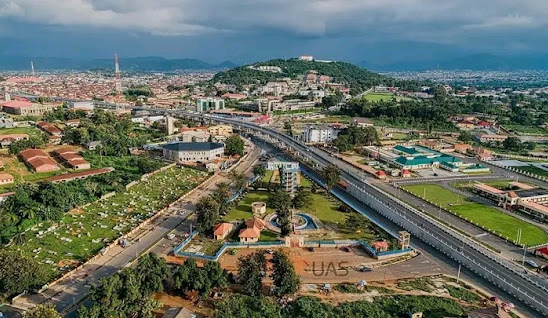

Ekiti, my hometown, is a state in southwestern Nigeria, known for its rich cultural heritage, beautiful landscapes, and vibrant communities. From the rolling hills to the bustling markets, Ekiti offers a very unique blend of tradition and modernity. Explore the lush greenery, visit historical sites, and experience the warmth of the Ekiti people. Whether you're interested in nature, culture, or cuisine, Ekiti has something for everyone.
Ikogosi Warm Spring is a natural wonder where warm and cold springs meet. A resort was built aroound it, making it a perfect spot for relaxation and enjoying nature.
A very popular hiking spot, Arinta Waterfall flows down rocky hills into a natural pool surrounded by forest vegetation. This waterfall supports diverse aquatic habitats essential for various plant species and the endangered grey parrot. It is a vital source of freshwater for drinking, irrigation, and industrial use, and it helps prevent erosion and maintain soil health. The waterfall also affects the local climate by regulating humidity and cooling the area. Additionally, it is a popular tourist destination, offering recreational activities such as swimming, hiking, and nature observation.
Esa Cave, located in Iyin-Ekiti within the Irepodun/Ifelodun LGA, can accommodate around thirty-four thousand people and historically provided refuge during Yoruba internecine wars. Situated beside a mountain approximately 10,000 feet above sea level, the cave is owned by the Ijoro family of Okesale, who have lived there for centuries. The cave is about 3 kilometers from Ado-Ekiti, the state capital. It retains its natural appearance with evidence of long-term use, including demarcated rooms with mud brick walls and small boulders used as pillows by former occupants. This site offers a rich exploration of Yoruba history.